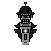
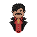
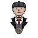
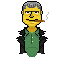

Ideas de detalles · 2
Segunda tanda de propuestas con el mismo estilo de la ficha policial, el corcho, el periódico y la radio (que ya están en el juego). Dime cuáles te gustan y las integro.
1 · Mercado Negro en un maletín
El Mercado abre como un maletín de cuero con forro de terciopelo rojo: cada objeto es una tarjeta con su precio en una etiqueta dorada, y tu dinero va en un fajo con clip abajo.
2 · Podio con flashes de prensa
Al terminar, el ganador sube al escalón más alto mientras saltan los flashes de las cámaras antiguas y aparece el titular. (Los flashes se ven animados en esta página.)

3 · Pantalla de carga con cuenta atrás de proyector
Entre contratos, la cuenta atrás de las películas antiguas (3, 2, 1) con la aguja que gira, grano y el nombre del siguiente contrato. Dura lo mismo que la carga actual.
SIGUIENTE CONTRATO · EL GRAN ATRACO
4 · Retos en una libreta de apuestas
Los retos del día y las misiones escritos a mano en la libreta de un corredor de apuestas; al cumplirlos se tachan con lápiz.
RETOS DEL DÍA
ESTA SEMANA
5 · Tienda como sastrería
Los capos en maniquíes de sastre con su etiqueta de cartón colgando del cordel (precio o "Tuyo"). Los dados y auras irían en una vitrina de cristal aparte.

◉ 400El Patrón
◉ 500El Brummie6 · Historial como libro de cuentas
El Historial como el libro de contabilidad de la banda: columnas con renglones verdes, totales con doble raya y las derrotas en tinta roja.
Libro de Cuentas
| CONTRATO | JUGADAS | GANADAS | PERDIDAS |
|---|---|---|---|
| Guerra de Bandas | 12 | 5 | 7 |
| El Gran Atraco | 10 | 6 | 4 |
| Imperio Criminal | 8 | 3 | 5 |
| Apuestas | 7 | 3 | 4 |
| Modo Party | 5 | 2 | 3 |
| TOTAL | 42 | 19 | 23 |
7 · TOP: "Los más buscados"
El TOP como carteles de "SE BUSCA" pegados en una pared de ladrillo: la recompensa es el número de victorias. Hoy el TOP muestra a los 50 mejores; arriba irían los 3 primeros en carteles grandes y el resto en una lista de "otros sospechosos".
 DARB42 partidas19 VICTORIAS
DARB42 partidas19 VICTORIAS
EL GORDO40 partidas12 VICTORIASOtros sospechosos: 4. Capo Rojo · 11 · 5. Ana · 9 · 6. Bigotes · 8 …